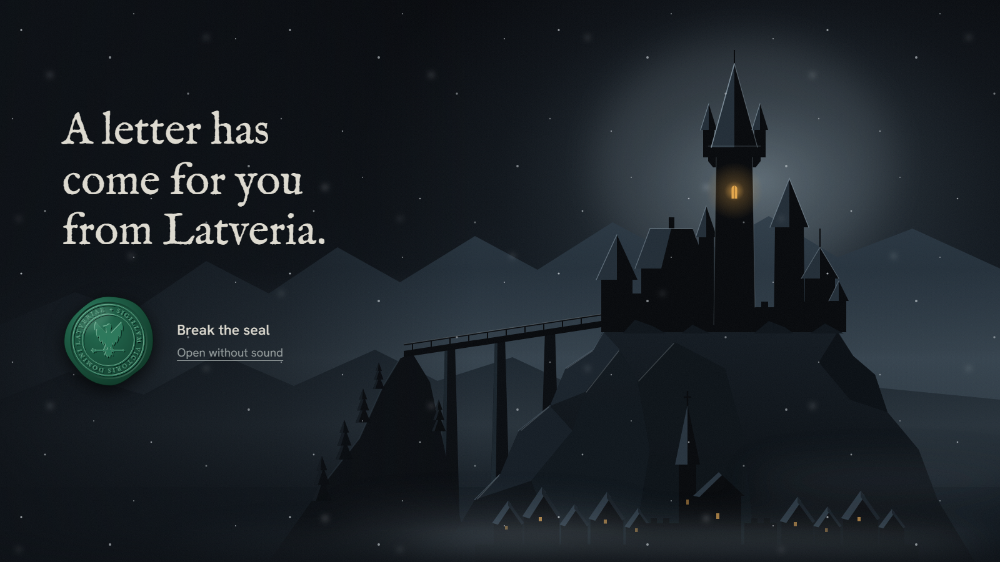
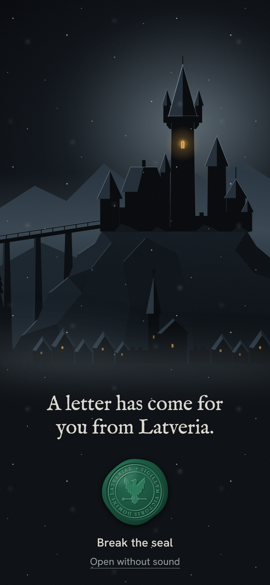
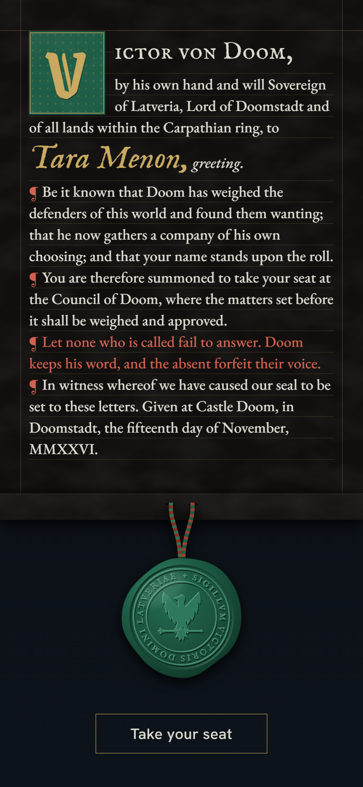

I. The Winter Chancery
A sealed letter from a real place. Black vellum, silver ink, green wax, and a castle with one lit window.



Opening screen, and the summons once the seal is broken.
- The summons is a letter sealed shut for one reader
- Palette blue-black, silver, leaf gold, rubric red, green wax
- Type IM Fell English, EB Garamond, one Grenze Gotisch initial